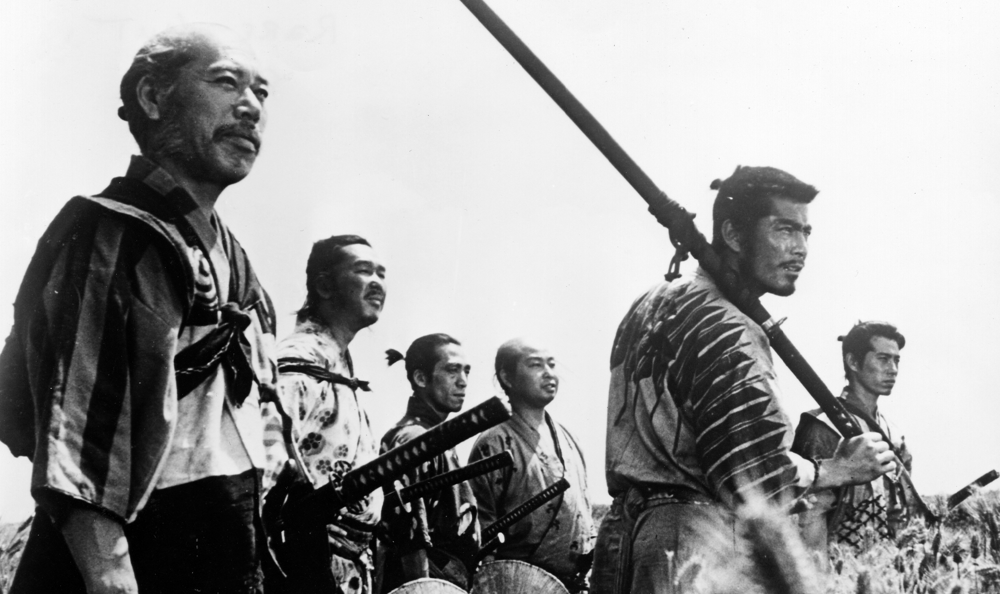

What Makes Seven Samurai (1957) So Great?
Seven Samurai is undoubtedly among the greatest movies of all time, but did you wonder what exactly makes this old movie a timeless classic? Directed by legendary Japanese director Akira Kurosawa, this 1957 made film had a huge budget of 500.000 dollars. It was a long expected movie of an already famous director. It included a great number of extras, and many famous actors. Its story revolves around a poor village of farmers terrorized by bandits who steal their crops. Desperate for protection, the villagers decide to hire samurai warriors to defend them. Although the movie initially didn't get the love it deserved at first, its popularity grew more and more by time. Seven Samurai's deep philosophical messages and revolutionary shooting techniques make it one of the best movies ever made.
"Seven Samurai" is certainly a smart movie with its grey narrative and tragic story. One of the most noticeable aspects of the film is its portrayal of the villagers. Unlike many stories that present peasants as purely innocent victims, "Seven Samurai" displays their complex morality. The villagers are not portrayed as purely good-hearted; instead, their actions show both desperation and moral ambiguity. This is particularly evident in the way they initially deceive the samurai and hide their food. Their immorality, however, is shown to be a consequence of the harsh realities they face, surrounded by a world that is equally ruthless. Additionally, the film explains that the villagers' immorality is not inherent but the result of their circumstances. Director Kurosawa tells a story of harsh world where survival is often prioritized over morality, and everyone, including the samurai and bandits, behaves within a morally grey area. This viewpoint forces viewers to consider the reasons behind the villagers' actions and to see them as products of a brutal and unforgiving environment rather than simply condemning them.
Furthermore, "Seven Samurai" addresses the effects of social classes on personal relationships, particularly through the tragic love story between Katsushirō, a young samurai, and Shino, a farmer's daughter. As stated by Ebert (2001) in his review of the film, "And there is a forbidden romance between the samurai Katsushiro (Isao Kimura) and a village girl. They love each other, but a farmer's daughter cannot dream of marrying a ronin" Their romance is hopeless from the start due to the social structures that dictate their lives. The film dramatically shows how their love is ultimately sacrificed to the demands of duty and class expectations, adding further tragedy to the story. In conclusion, "Seven Samurai" shows the complicated side of human nature and society, telling stories of characters that are far from perfect and displaying how social norms can crush good emotions like love and mercy.
Revolutionary Cinematic Techniques
"Seven Samurai's" shooting techniques and other revolutionary ideas in dramatic action scenes greatly contribute to its success. One of the most important aspects of the film is Akira Kurosawa's use of extras. Unlike many films where extras merely serve as background, in "Seven Samurai," they play a vital role in creating a realistic and immersive environment. The chaos of the battle scenes, for example, is shown by the presence of numerous villagers and bandits, each giving the feeling of urgency and danger to the viewers.
Kurosawa's use of camera angles and symbolism is another key element that sets "Seven Samurai" apart. The director often uses dynamic camera movements and angles to get the viewers feel the intensity and emotion of scenes. A review done by James Berardinelli (2016) states that: "he frequently uses the "deep focus" camera technique to keep everyone in focus. He rarely resorts to close-ups, and, when he does, there's a specific reason. His battle scenes are realistic, but not confusing." For instance, low-angle shots of the samurai shows their strength and heroism, while high-angle shots of the villagers focuses their vulnerability. Additionally, Kurosawa uses weather, such as rain during battle scenes, to further add to the sense of chaos during war. These visual techniques not only adds to the story but also improves depth.
Costumes also plays a significant role in "Seven Samurai," conveying important information about the characters and their social status. The samurai's armor and distinctive clothing set them apart from the villagers, emphasizing the social difference between the two groups. At the same time, the worn and torn off clothes of the villagers indicates their poverty and struggle for survival. These visual details help to establish the characters' backgrounds and improve the film's themes of class disparity and social struggle. In conclusion, the film's revolutionary use of cinematic techniques, from the strategic use of extras to the clever camera angles and thoughtful costume design, makes this film one of the timeless classics cinemas ever shown.
"Seven Samurai" is a masterpiece not just because of its realistic and bitter story but also for its smart approach to filmmaking. By combining philosophical ideas with innovative cinematic techniques, Akira Kurosawa created a film that continues to inspire viewers worldwide. It is this mix of smart storytelling and great visuals that makes "Seven Samurai" a timeless classic.
Word Count: 811